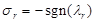
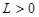
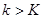
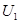
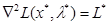
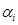

International Journal of Electrical and Computer Systems (IJECS)
ISSN: 1929-2716

Volume 1, Issue 1, Year 2012 - Pages 1-8
DOI: 10.11159/ijecs.2012.001
Constrained Nonlinear Least Squares: A Superlinearly Convergent Projected Structured Secant Method
Nezam Mahdavi-Amiri, Narges Bidabadi
Sharif University of Technology, Faculty of Mathematical Sciences
Azadi Street, Tehran, Iran
nezamm@sina.sharif.edu, n_bidabadi@mehr.sharif.ir
Abstract - Numerical solution of nonlinear least-squares problems is an important computational task in science and engineering. Effective algorithms have been developed for solving nonlinear least squares problems. The structured secant method is a class of efficient methods developed in recent years for optimization problems in which the Hessian of the objective function has some special structure. A primary and typical application of the structured secant method is to solve the nonlinear least squares problems. We present an exact penalty method for solving constrained nonlinear least-squares problems, when the structured projected Hessian is approximated by a projected version of the structured BFGS formula and give its local two-step Q-superlinear convergence. For robustness, we employ a special nonsmooth line search strategy, taking account of the least squares objective. We discuss the comparative results of the testing of our programs and three nonlinear programming codes from KNITRO on some randomly generated test problems due to Bartels and Mahdavi-Amiri. Numerical results also confirm the practical relevance of our special considerations for the inherent structure of the least squares.
Keywords: Constrained Nonlinear Least Squares, Exact Penalty Methods, Projected Hessian Updating, Structured Secant Updates, Two-Step Superlinear Convergence
© Copyright 2015 Authors - This is an Open Access article published under the Creative Commons Attribution License terms. Unrestricted use, distribution, and reproduction in any medium are permitted, provided the original work is properly cited.
1. Introduction
Consider the constrained nonlinear least squares (CNLLS) problem,
where, , , , , and, , are
functions from to , all assumed
to be twice continuously differentiable. These problems arise as experimental
data analysis problems in various areas of science and engineering such as
electrical engineering, medical and biological imaging, chemistry, robotics,
vision, and environmental sciences; e.g., see Nievergelt (2000), Golub and
Pereyra
(2003) and Mullen et al. (2007). The gradient and Hessian of can be expressed as
, all assumed
to be twice continuously differentiable. These problems arise as experimental
data analysis problems in various areas of science and engineering such as
electrical engineering, medical and biological imaging, chemistry, robotics,
vision, and environmental sciences; e.g., see Nievergelt (2000), Golub and
Pereyra
(2003) and Mullen et al. (2007). The gradient and Hessian of can be expressed as
and
where, is the matrix whose columns are the gradients, and
Using this special structure for approximating the Hessian matrix has been the subject of numerous research papers; see Fletcher and Xu (1987), Dennis et al. (1989), Mahdavi-Amiri and Bartels (1989), Li et al. (2002), Mahdavi-Amiri and Ansari (2012a), and Bidabadi and Mahdavi-Amiri (2012). Here, we consider the structured BFGS approximate formula (Dennis et al., 1989) for the structured least squares projected Hessian and a special line search scheme given by Mahdavi-Amiri and Ansari (2012c) leading to a more efficient algorithm than general nonlinear programming schemes. An exact penalty function for nonlinear programming problems is defined to be
where,  is a penalty parameter. If is a stationary point of (1) and the
gradients of the active constraints at are
linearly independent, then there exists a real number such
that is also a stationary point of, for each. Mahdavi-Amiri and Bartels (1989), based
on a general approach for nonlinear problems (See Coleman and Conn, 1982a),
proposed a special structured algorithm for minimization of with a fixed value of in solving the CNLLS
problems. Let be a small
positive number used to identify the near-active (-active)
constraint set. The algorithm obtains search directions by using an -active set
is a penalty parameter. If is a stationary point of (1) and the
gradients of the active constraints at are
linearly independent, then there exists a real number such
that is also a stationary point of, for each. Mahdavi-Amiri and Bartels (1989), based
on a general approach for nonlinear problems (See Coleman and Conn, 1982a),
proposed a special structured algorithm for minimization of with a fixed value of in solving the CNLLS
problems. Let be a small
positive number used to identify the near-active (-active)
constraint set. The algorithm obtains search directions by using an -active set
and a corresponding merit function:
where,
Step lengths are chosen by using, which is with. The optimality conditions are checked by using, as well. The gradient and Hessian of are:
and
where,
It is well known that the necessary conditions for to be an isolated local minimizer for, under the assumptions made above on and the, are that there exist multipliers, , for, such that
A point for which only (12) above is satisfied is called a stationary point of. A minimizer must be a stationary point satisfying (13). One major premise of the algorithm is that the multipliers are only worth estimating in the neighborhoods of stationary points. Nearness to a stationary point is governed by a stationary tolerance. The algorithm is considered to be in a local state, if norm of the projected or reduced gradient, i.e.,, is smaller than this tolerance, and it is in a global state, otherwise. Fundamental to the approach is the following quadratic problem:
where,
the are the Lagrange multipliers associated with (14) in a local state (in the proximity of a stationary point) and the are taken to be zero when the algorithm is in a global state (far from a stationary point). In practice, the QR decomposition of is used to solve the quadratic problem:
If we set , for some  , then is to be found by solving
, then is to be found by solving
Therefore, for solving the quadratic problem (14), we need an approximation for the projected or reduced Hessian . We are to present a projected structured BFGS update formula for computing an approximation by providing a quasi-Newton approximation, where,
with the setting . We give the asymptotic convergence results of exact penalty methods using this projected structured BFGS updating scheme. Consider the asymptotic case, that is, the case that the final active set has been identified, so that for all further , with designating the optimal point, we have
Suppose that
and we want to update  to ,
approximating
to ,
approximating
Note that, where is the
number of active constraints. We assume rank () =, for all . Letting and , we have , where, in order to simplify notation,
the presence of a bar above a quantity indicates that it is taken at iteration , and the absence of a bar indicates
iteration
. Letting and , we have , where, in order to simplify notation,
the presence of a bar above a quantity indicates that it is taken at iteration , and the absence of a bar indicates
iteration  . If the constraints are linear, then, for. In the
nonlinear case, asymptotically it is expected that be
negligible and thus we obtain (Mahdavi-Amiri and Bartels, 1989):
. If the constraints are linear, then, for. In the
nonlinear case, asymptotically it is expected that be
negligible and thus we obtain (Mahdavi-Amiri and Bartels, 1989):

Thus, we use the quasi-Newton formula to update to according to the secant equation, when has actually become negligible, that is, when
for, where  is the
iteration number and denotes the
Euclidean norm, as suggested by Nocedal and Overton (1985) for general
constrained nonlinear programs. Therefore, an approximation to is
is the
iteration number and denotes the
Euclidean norm, as suggested by Nocedal and Overton (1985) for general
constrained nonlinear programs. Therefore, an approximation to is
where,
A general framework for exact penalty algorithm to minimize (5) is given below (see Mahdavi-Amiri and Bartels, 1989).
Algorithm 1: An Exact Penalty Method.
Step 0: Give an initial point and .
Step 1: Determine, , , . Identify
the matrix by computing the QR decomposition of and set global=true, optimal=false.
, . Identify
the matrix by computing the QR decomposition of and set global=true, optimal=false.
Step 2: If , then obtain the search direction that is a solution of the quadratic
problem (14), where,  approximates the global
Hessian , and go to Step 5.
approximates the global
Hessian , and go to Step 5.
Step 3: Determine the Lagrange multipliers, , as a solution of
If conditions (13) are not satisfied, then choose an index for which one of (13) is violated, and determine the search direction that satisfies the system of equations , where, is the th unit vector, and , and go to Step 5.
Step 4: Set
global=false. Determine the direction , where, is the solution to the quadratic problem
(14),  approximates the local Hessian
approximates the local Hessian  with
the being the Lagrange multipliers
associated with (14) as determined in Step 3. The vertical direction , is the solution to the system
with
the being the Lagrange multipliers
associated with (14) as determined in Step 3. The vertical direction , is the solution to the system
where, is the vector of the constraint functions, ordered in accordance with the columns of . Set the step length and go to Step 6.
Step 5: Determine step length using a line search procedure on .
Step 6: Compute . If a sufficient decrease has been obtained, then set , else go to Step 8.
Step 7: If global=false, then check the optimality conditions for . If is optimal, then set optimal=true and stop, else go to Step 1.
Step 8: If
global=true and , then reduce to change , else reduce
 so that becomes
large tested against
so that becomes
large tested against  .
.
Step 9: If
(global=true and ) or is too small or  is too
small, then report failure and stop, else go to Step 1.
is too
small, then report failure and stop, else go to Step 1.
Remarks: In Step 6, we have used an appropriate nonsmooth line search strategy to determine the step length satisfying a sufficient decrease in that is characterized by the line search assumption; see Coleman and Conn (1982b), part (v), P. 152. For a recent line search strategy for CNLLS problems, see Mahdavi-Amiri and Ansari (2012a, 2012c). In Step 7, the optimality conditions are checked as follows: If is small enough, then determine the multipliers , , as the least squares solution of (26). If the conditions (13) are satisfied, then is considered to satisfy the first order conditions, and thus being a stationary point, the algorithm stops, as commonly practiced in optimization algorithms. Of course, second order conditions are needed to be checked to ascertain optimality of .
In the remainder of our work, we drop the index from and , for simplicity.
For approximating the projected structured Hessians in solving the quadratic problem, we make use of the ideas of Dennis et al. (1989) in a different context. We consider the structured BFGS update of , given by
where,
Remark: Clearly, , given by (32), satisfies the secant equation .
Here, we use the BFGS secant updates for approximating the projected structured Hessians in solving the constrained nonlinear least squares problem.
The remainder of our work is organized as follows. In § 2, we give the asymptotic two-step superlinear convergence of the algorithm. Competitive numerical results are reported in § 3. The results are compared with the ones obtained by the three algorithms in the KNITRO software package for solving general nonlinear programs. We conclude in § 4.
2. Local Convergence
Here, we give our local two-step superlinear convergence result. We make the following assumptions.
Assumptions:
(A1) Problem (1) has a local solution. Let.
(A2) , generated by Algorithm 1 for minimizing is so that , .
(A3) The function and , , are twice continuously differentiable on the compact set .
(A4) and are locally Lipschitz continuous at .
(A5) is locally Lipschitz continuous at , that is, there exist a constant  such that
(A6) The
gradients of the active constraints at , for all  , are linearly independent on .
, are linearly independent on .
(A7) There exist positive constants and such that
where, is the projected Hessian at .
We will make use of the following two theorems from Mahdavi-Amiri and Ansari (2012a) and Nocedal and Overton (1985).
Theorem 1. (Mahdavi-Amiri and Ansari, 2012a) There exists such that if and , then
where, , is a
constant independent of  , and if equation (8)
holds, then
, and if equation (8)
holds, then
where,
and .
Theorem 2. (Nocedal and
Overton, 1985) Suppose that Algorithm 1 is applied with any update rule for
approximating the projected Hessian matrix. If ,, for all  , and
, and
then , at a two-step Q-superlinear rate.
We now give the so-called bounded deterioration inequality for the structured BFGS update formula.
Theorem 3. Suppose that the inequality (23) and Assumptions (A5) and (A7) hold. Let be the projected structured BFGS secant update formula, that is, where, is the BFGS update formula of obtained by using (28). Then, there exist a positive constant and the neighborhood such that
for all.
Now, we give a linear convergence result.
Theorem 4. Suppose that
Assumptions (A1)-(A7) hold. Let  be the structured BFGS
secant update formula, that is, where, is the BFGS update formula of obtained by using (28). Let the sequence
be generated by Algorithm 1. For any , there exist positive constants and such that if
and , then
be the structured BFGS
secant update formula, that is, where, is the BFGS update formula of obtained by using (28). Let the sequence
be generated by Algorithm 1. For any , there exist positive constants and such that if
and , then
that is, converge to , at least at a two-step Q-linear rate.
The next theorem shows the satisfaction of (34) in Theorem 2 for the structured BFGS update formula.
Theorem 5. If exists so that for every iteration , we have
and we update the  using the structured BFGS secant formula
for each , that is,
using the structured BFGS secant formula
for each , that is,  ,
where,
is the BFGS update formula of obtained by using (28), then
,
where,
is the BFGS update formula of obtained by using (28), then
In §1, we pointed out that we use the structured quasi-Newton update formula for approximating the projected Hessian in Algorithm 1, if the inequality (23) holds (this is expected to happen when the algorithm is in its local phase with the iterate being close to a stationary point). Now, we give the superlinear convergence result for Algorithm 1.
Theorem 6. Suppose that
Assumptions (A1)-(A7) hold. Let the sequence be generated
by Algorithm 1 and  be obtained by
be obtained by
where, is the BFGS update formula of obtained by using (28). Then, converges to with a two step superlinear rate, that is,
3. Numerical Experiments
We coded our algorithm
in MATLAB 7.6.0. In the global steps, a line search strategy is necessary. In
our implementation, for the line search strategy, we used the approach
specially designed for nonlinear least squares given by Mahdavi-Amiri and
Ansari (2012a, b, c). We put  in (23), as suggested
by Nocedal and Overton (1985) and set and . The initial matrix is set to be the identity matrix. For
robustness, we followed the computational considerations provided by
Mahdavi-Amiri and Bartels (1989). We tested our algorithm on 35 randomly
generated test problems using the test problem generation scheme given by
Bartels and Mahdavi-Amiri (1986).
in (23), as suggested
by Nocedal and Overton (1985) and set and . The initial matrix is set to be the identity matrix. For
robustness, we followed the computational considerations provided by
Mahdavi-Amiri and Bartels (1989). We tested our algorithm on 35 randomly
generated test problems using the test problem generation scheme given by
Bartels and Mahdavi-Amiri (1986).
A simple test generating scheme in Bartels and Mahdavi-Amiri (1986) is described here. The following parameters are set for the least squares problem:
 : number of variables;
: number of variables;- : number of components in F(x);
- : number of equality constraints;
- : number of inequality constraints;
 : number of active inequality
constraints.
: number of active inequality
constraints.
The random values for the components of an optimizer and the corresponding Lagrange multipliers, the , of the active equality constraints are set between -1 and 1, while the Lagrange multipliers of the active inequality constraints are chosen between 0 and 1 (the Lagrange multipliers of the inactive constraints are set to zero). Then, the Lagrangian Hessian matrix at is determined as follows:
where,  is a upper
triangular matrix. Except for , which is set to 2,
all the components of are random values in the range
-1 and 1. is also an upper triangular matrix with
random components being set between -1 and 1. The scaler is under user control, and it dictates
whether the Hessian of the Lagrangian of the generated problem is positive
definite ( ) or indefinite ().
) or indefinite ().
Next, for generating the random least squares problem, we consider ,where,
The values of and are determined such that and , to satisfy the sufficient conditions for local optimality of . The constraints of the problem are set as follows:
where, the constants  are set so that for the active constraints and for the inactive constraints. For setting the, the gradient of at is set to the th column of the identity matrix, to have the linear independence of the active constraints at hand.
The parameters of these random problems are reported in Table 1. All random numbers needed for the random problems were generated by the function ''rand'' in MATLAB. We generated 35 random problems, composed of 5 problems in each one of the categories numbered in Table 1 along with the parameter settings. For the generated problem sets 1-3, 4-5 and 6-7, all quantities were exactly the same and only differed in each set by having a different value of. A variety of problems having different number of variables and number of constraints were used. We generated problems not only having positive definite, but also indefinite Hessians of the Lagrangian (with positive definite projected Hessians).
Table 1. The parameters of random problems.
| Problem Number |
|
|
||||
|
1 |
5 |
5 |
2 |
3 |
2 |
1 |
|
2 |
5 |
5 |
2 |
3 |
2 |
-1 |
|
3 |
5 |
5 |
2 |
3 |
2 |
-10 |
|
4 |
10 |
10 |
5 |
5 |
2 |
1 |
|
5 |
10 |
10 |
5 |
5 |
2 |
-1 |
|
6 |
20 |
20 |
8 |
12 |
2 |
1 |
|
7 |
20 |
20 |
8 |
12 |
2 |
-1 |
For comparison, we solved these random problems by the three algorithms in KNITRO 6.0 (Interior-point/Direct, Interior-point/CG and Active set algorithms). In keeping the three algorithms of KNITRO in line with our computing features, we set the parameters 'GradObj' and 'GradConstr' to 'on', so that exact gradients are used, and the other parameters were set to the default parameter values (this way, the BFGS updating rule was used for Hessian approximations).
For our comparisons, we
explain the notion of a performance profile (Dolan and More', 2002) as a means
to evaluate and compare the performance of the set of solvers on a test set . We
assume that we have solvers and  problems. We are interested in
using the number of function evaluations as a performance measure. Suppose
problems. We are interested in
using the number of function evaluations as a performance measure. Suppose  is the number of function evaluations
required to solve problem by algorithm. We compare the performance on problem by solver with
the best performance by any solver on this problem; that is, we use the
performance ratio
is the number of function evaluations
required to solve problem by algorithm. We compare the performance on problem by solver with
the best performance by any solver on this problem; that is, we use the
performance ratio
We assume that a parameter is chosen so that, for all and, and we put if and only if algorithm does not solve problem. If we define
then is the probability for solver that a performance ratio is within a factor of the best possible ratio. The function is the distribution function for the performance ratio. The value of is the probability that the solver will win over the rest of the solvers (Dolan and More', 2002). Figure 1 shows the performance profiles of the five solvers. The most significant aspect of Figure 1 is that on this test set our algorithm outperforms all other solvers. The performance profile for our algorithm lies above all the others for all performance ratios. According to Figure 1, we observe that our algorithm has shown to be substantially more efficient more often than the three programs in KNITRO.
4. Conclusion
We proposed a projected structured BFGS scheme for approximating the projected structured Hessian matrix in an exact penalty method for solving constrained nonlinear least squares problems. We established the local two-step superlinear convergence of the proposed algorithm. Comparative numerical results using the performance profile of Dolan and More' showed the efficiency and robustness of the algorithm.
Acknowledgements
The authors thank Iran National Science Foundation (INSF) for supporting this work under grant no. 88000800.
References
Bartels, R. H., Mahdavi-Amiri, N. (1986). On generating test problems for nonlinear programming algorithms. SIAM Journal of Scientific and Statistical Computing, 7(3), pp. 769–798. View Article
Bidabadi, N., Mahdavi-Amiri, N. (2012). A two-step superlinearly convergent projected structured BFGS method for constrained nonlinear least squares. To appear in Optimization View Article
Coleman, T. F., Conn, A. R. (1982a). Nonlinear programming via an exact penalty function: Asymptotic analysis. Mathematical Program., 24, pp. 123–136. View Article
Coleman, T. F., Conn, A. R. (1982b). Nonlinear programming via an exact penalty function: Global analysis. Mathematical Program., 24, pp. 137–161. View Article
Dennis, J. E., Martinez, H. J., Tapia R. A. (1989). Convergence theory for the structured BFGS secant method with an application to nonlinear least squares. Journal of Optimization Theory and Applications, 61, pp. 161-178. View Article
Dolan, E. D., More, J. J. (2002). Benchmarking optimization software with performance profiles. Math. Program., 91, pp. 201-213. View Article
Golub, G., Pereyra, V. (2003). Separable nonlinear least squares: the variable projection method and its applications, topical review. Inverse Problems 19, pp. R1–R26 View Article
Fletcher, R., Xu, C. (1987). Hybrid methods for nonlinear least squares. IMA Journal of Numerical Analysis, 7, pp. 371-389. View Article
Li, Z. F., Osborne, M. R., Prvan, T. (2002). Adaptive algorithm for constrained least-squares problems. Journal of Optimization Theory and Applications, 114(2), pp. 423-441. View Article
Mahdavi-Amiri, N., Ansari, M. R. (2012a). Superlinearly convergent exact penalty projected structured Hessian updating schemes for constrained nonlinear least squares: asymptotic analysis. To appear in Bulletin of the Iranian Mathematical Society, View Article
Mahdavi-Amiri, N., Ansari, M. R. (2012b). Superlinearly convergent exact penalty projected structured Hessian updating schemes for constrained nonlinear least squares: global analysis. To appear in Optimization View Article
Mahdavi-Amiri, N., Ansari, M. R. (2012c). A Superlinearly Convergent Penalty Method with Nonsmooth Line Search for Constrained Nonlinear Least Squares. SQU Journal for Science, 17(1), pp. 103-124. View Article
Mahdavi-Amiri, N., Bartels, R. H. (1989). Constrained nonlinear least squares: An exact penalty approach with projected structured quasi-Newton updates. ACM Transactions on Mathematical Software, 15(3), pp. 220–242 View Article
Mullen, K. M., Vengris, M., van Stokkum, I. H. M. (2007). Algorithms for separable nonlinear least squares with application to modeling time-resolved spectra. Journal of Global Optimization, 38, pp. 201–213 View Article
Nievergelt, Y. (2000). A tutorial history of least squares with applications to astronomy and geodesy. Journal of Computational and Applied Mathematics, 121, pp. 37-72. View Article
Nocedal, J., Overton, M. L. (1985). Projected Hessian updating algorithms for nonlinearly constrained optimization. SIAM Journal of Numerical Analysis, 22(5), pp. 821–850. View Article